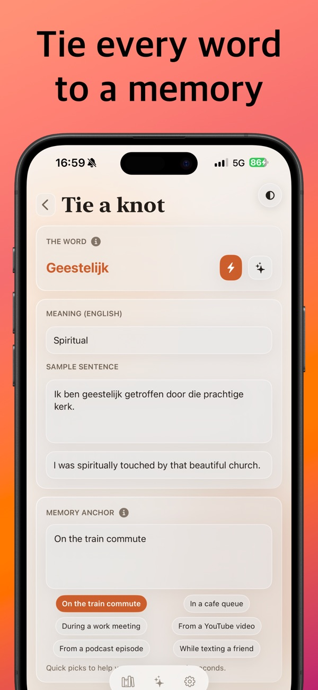

Echoknot
Language memories, tied to real moments.
Capture words where you meet them, with translation, context and a memory anchor. Then tie three to eight of them into a short Echo story you will actually remember.
PlatformiPhone
PriceFree, optional Premium
StorageLocal-first, encrypted
AccountNot required

What it does
- CaptureSave words as knots with translation, usage, anchor and tags; AI auto-fill when you ask.
- Echo storiesPick 3–8 knots and get a short personal story. Save, favorite and revisit.
- Daily AIFree: 30 auto-fills and 10 echoes a day. Premium: 200 and 30.
- ExportJSON or PDF, any time.
- Optional syncPremium adds encrypted cloud backup with Sign in with Apple.
Get Echoknot
Available on the App Store for iPhone.